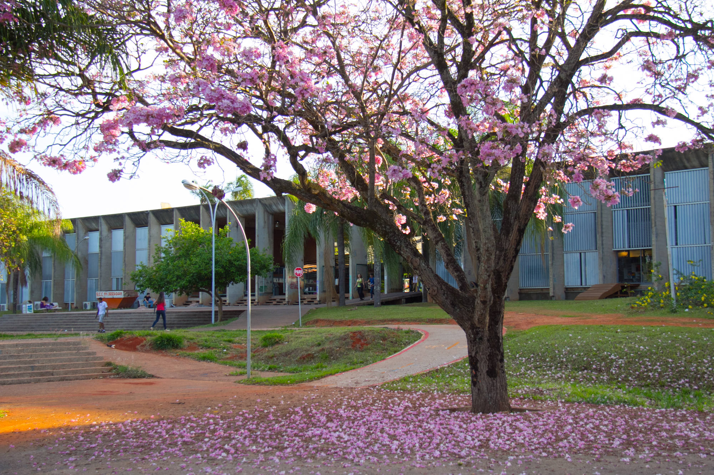

<h1>The purpose of this website</h1>

Feel free to send me any e-mail through
<ul>
  <li>joaoaugustosds@gmail.com</li>
  <li>joao.sobral@itp3.uni-stuttgart.de </li>
  <li><strike>joao.sobral-da-silva@uibk.ac.at</strike></li>
  <li><strike>joaoaugustosds@ifsc.usp.br</strike></li>
</ul>
<!-- <div class="posts">
  {% for post in site.categories.researches %}
    <article class="post">

      <h1><a href="{{ site.baseurl }}{{ post.url }}">{{ post.title }}</a></h1>

      <div class="entry">
        {{ post.excerpt }}
      </div>

      <a href="{{ site.baseurl }}{{ post.url }}" class="read-more">Read More</a>
    </article>
  {% endfor %}
</div> -->
<!--

<!--  <figure> -->
<!--   
<!--   height="auto" > -->
<!--   <figcaption>Fig: My hometown Brasília (Brazil) seen from above (Divulgação/Setur). </figcaption> -->
<!-- </figure>  -->
<figure>
  
  <figcaption>
    Fig: Ipê-rosa tree at the University of Brasília in my hometown. The blossoming of these trees usually takes place from the end of May to October, coloring the scenery in white, yellow, pink and purple. (<a
      href="https://www.flickr.com/photos/unb_agencia/15300380928"
      >Source</a
    >).
  </figcaption>
</figure>
